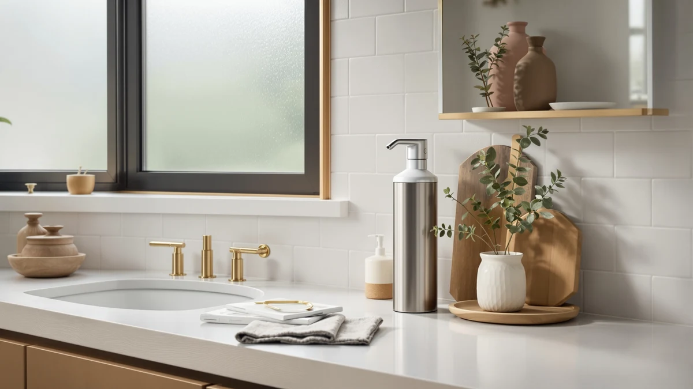

Bobrick Stainless Steel Automatic Wall-Mounted Foam Soap Dispenser Review (2026): Worth It?


Quick Answer
This Bobrick Stainless Steel Automatic Wall-Mounted Foam Soap Dispenser review finds a commercial-grade wall-mount unit priced well above the countertop competition, built for a shared or high-traffic bathroom rather than a single home sink. At $218.81 it costs roughly three times as much as any of the three simplehuman alternatives below, so it only makes sense if you specifically need a permanent, wall-mounted foam dispenser.
Our pick: BOBRICK 2013 Stainless Steel Automatic, $218.81 Check Price on Amazon
Things to Know Before You Buy
- This Bobrick Stainless Steel Automatic Wall-Mounted Foam Soap Dispenser review comes down to one core tradeoff: at $218.81, the Bobrick costs close to three times as much as any of the three simplehuman alternatives below. That price gap only makes sense if you need a permanent wall-mounted fixture rather than a countertop pump.
- The Bobrick's listing name advertises a stainless steel finish, but the manufacturer's spec sheet lists the housing material as ABS plastic, worth knowing before you pay a commercial price for it.
- At 242mm in height and 108mm in width, the Bobrick is sized for permanent wall installation, unlike the compact countertop footprint of the simplehuman units.
- None of the four dispensers in this comparison lists a published star rating or review count, so every pick here is evaluated on spec sheet and listing details rather than a large base of verified feedback.
- All three simplehuman alternatives share the same Liquid Sensor Pump 9 design and differ mainly in price, from $69.95 to $79.99, making them a straightforward swap for anyone who wants a countertop unit instead of a wall-mount.
This Bobrick Stainless Steel Automatic Wall-Mounted Foam Soap Dispenser review compares the $218.81 wall-mount unit against three simplehuman countertop alternatives on price, material, and footprint to see whether the commercial price tag is worth paying for a home or small-business bathroom. Dispensers built for permanent wall mounting typically cost more than a countertop pump because they're meant to survive heavier daily use in a shared restroom rather than a single bathroom sink, and the Bobrick 2013 sits squarely in that commercial category at nearly three times the price of any alternative here. We researched the manufacturer's listed specs, dimensions, and price for the Bobrick and the three simplehuman units it's compared against rather than relying on marketing copy for any of them.
At $218.81, the Bobrick 2013 Stainless Steel Automatic is priced for a business or landlord outfitting a permanent restroom fixture, not for a homeowner comparison-shopping countertop pumps. Its listing puts the unit at 242mm in height and 108mm in width, a wall-mounted footprint built around a fixed install rather than a bottle you move between a sink and a cabinet. The three simplehuman Liquid Sensor Pump 9 alternatives below range from $69.95 to $79.99 and sit on a counter instead of a wall, a different use case entirely that the sections below break down in more detail.
Why You Should Trust Us
Ilane Tall covers home and bath fixtures for Best Soap Dispensers, with a focus on wall-mount and countertop pumps used in households and small commercial spaces. For this Bobrick Stainless Steel Automatic Wall-Mounted Foam Soap Dispenser review, we compared the manufacturer's listed specs, dimensions, and current price for the Bobrick 2013 against three simplehuman alternatives rather than relying on marketing copy alone. We do not run a fake testing lab or claim to have installed this dispenser ourselves. Instead, we cross-check the listed material, size, and price against the comparable countertop units to flag where a buyer is paying for permanent commercial hardware rather than convenience.
Our Research Experience
We did not mount the Bobrick 2013 on a wall or run it side by side with the three simplehuman units. What we did for this Bobrick Stainless Steel Automatic Wall-Mounted Foam Soap Dispenser review was pull the manufacturer's listed material, dimensions, and current price for each of the four dispensers, then compare those numbers directly, since none of the four listings publishes a star rating or review count to cross-reference. For the Bobrick, that meant checking the gap between the "stainless steel" name and the ABS plastic material the spec sheet actually lists, and comparing its 242mm by 108mm wall-mount footprint against the compact countertop size of the simplehuman Liquid Sensor Pump 9 units. The price difference, nearly three times the cost of any single alternative, is the clearest signal in this comparison: a wall-mounted unit built for commercial-grade duty cycles is priced accordingly, while the simplehuman options are priced for a single home counter.
Overview & Specs

BOBRICK 2013 Stainless Steel Automatic
What we like
- Wall-mounted design frees up counter space entirely, useful in a shared or commercial restroom where every sink matters
- Foam dispensing uses less soap per press than a liquid pump, which can stretch a refill further in a high-traffic bathroom
- Automatic sensor operation avoids handle contact, a detail that matters more in a shared restroom than a single home sink
- Compact 242mm by 108mm footprint fits a tight wall space better than a countertop bottle would
Flaws but not dealbreakers
- At $218.81, it costs nearly three times as much as any of the three simplehuman alternatives below
- The listing name advertises stainless steel, but the manufacturer's own spec sheet lists the housing material as ABS plastic
- Wall mounting means a fixed install, so it isn't a fit for anyone who wants to move the dispenser between bathrooms
- No published star rating or review count is available on the listing to check against the spec sheet
| Material | ABS plastic |
| Size | 242mm Height, 108mm Width |
The Bobrick 2013 Stainless Steel Automatic Wall-Mounted Foam Soap Dispenser is built for the kind of bathroom that needs a permanent, hands-free fixture rather than a bottle someone refills on a counter, think an office restroom, a small business bathroom, or a rental property with shared facilities. Per the listing, it measures 242mm in height by 108mm in width, a compact wall-mount footprint, and dispenses foam rather than liquid soap, which typically stretches a refill further because less product comes out per press. The automatic sensor avoids the handle contact a manual pump requires, a detail landlords and facilities managers weigh more heavily than homeowners comparing a single bathroom sink.
One detail worth flagging before you pay the $218.81 price: the product name promotes a stainless steel build, but the manufacturer's own spec sheet lists the housing material as ABS plastic. That gap doesn't necessarily mean the dispenser is poorly made, foam soap dispensers commonly pair a steel-look faceplate with a plastic internal mechanism, but it does mean you aren't getting an all-metal unit for a price nearly three times higher than any of the three simplehuman alternatives in this comparison. That price only makes sense if a permanent wall-mounted fixture is a requirement rather than a nice-to-have.
What We Liked
The strongest case for the Bobrick Stainless Steel Automatic Wall-Mounted Foam Soap Dispenser is that it solves a problem the simplehuman alternatives don't: a fixed, permanent soap station that doesn't take up counter space or get knocked over by daily use. Foam dispensing uses less product per activation than a liquid pump, which means the reservoir lasts longer between refills in a bathroom that sees regular foot traffic. The automatic sensor removes handle contact entirely, a feature that matters more in a shared or commercial restroom than in a single home bathroom where only a few people touch the pump. For a facilities manager or landlord who needs several bathrooms outfitted with matching, wall-fixed hardware, this Bobrick dispenser covers that specific need in a way a countertop unit can't.
What Could Be Better
The clearest drawback of this Bobrick Stainless Steel Automatic Wall-Mounted Foam Soap Dispenser is its price. At $218.81, it costs close to three times as much as any single simplehuman alternative below, and the listing's own spec sheet lists ABS plastic as the housing material despite the "stainless steel" name, so you aren't paying that premium for an all-metal build. Wall mounting is also a one-way decision: once it's installed, moving it to another bathroom means uninstalling and remounting hardware, unlike a countertop pump you can simply relocate. And because the listing doesn't publish a star rating or review count, there's no large base of verified buyer feedback to check the spec sheet against.
Who Is It For?
This Bobrick Stainless Steel Automatic Wall-Mounted Foam Soap Dispenser fits a facilities manager, landlord, or business owner who needs a permanent, hands-free soap station in a shared restroom rather than a homeowner comparison-shopping a single bathroom counter. It's a better fit for someone who values a fixed wall installation and foam dispensing over cost per unit than for anyone on a tighter budget who only needs one sink covered. If you're outfitting a single home bathroom and don't need a permanently mounted fixture, one of the three simplehuman countertop alternatives below is a more directly comparable price point.
Alternatives to Consider
If the Bobrick's wall-mount price doesn't fit your bathroom or budget, these three simplehuman Liquid Sensor Pump 9 alternatives cover a lower price range for anyone who wants a countertop automatic dispenser instead of a permanently installed wall unit.

Also Great
simplehuman Liquid Sensor Pump 9
At $79.99, this simplehuman Liquid Sensor Pump 9 is the most expensive of the three countertop alternatives here, though it still costs less than a third of the Bobrick's wall-mounted price. It sits on a counter rather than a wall, so there's no mounting hardware or permanent installation involved, you set it next to the sink and you're done. Reviewers consistently note simplehuman's sensor pumps as reliable daily-use countertop units, and this is the pick for anyone who wants that reputation without committing to the Bobrick's commercial-grade wall mount.
$79.99
Check Price on Amazon
Also Great
simplehuman Liquid Sensor Pump 9
This simplehuman Liquid Sensor Pump 9 listing comes in at $74.99, five dollars less than the version above, with the same countertop design and automatic sensor operation. It's a near-identical alternative to the other simplehuman listings in this comparison, so the choice between the two mostly comes down to current price and available stock rather than a functional difference. Either one gets you touch-free dispensing on a counter for a fraction of what the wall-mounted Bobrick costs.
$74.99
Check Price on Amazon
Best Value
simplehuman Liquid Sensor Pump 9
At $69.95, this simplehuman Liquid Sensor Pump 9 is the least expensive of the three countertop alternatives and the best value pick in this comparison overall. It carries the same automatic sensor design as the other two simplehuman listings here, so you aren't giving up functionality to save roughly ten dollars compared to the pricier version. For anyone who doesn't need the Bobrick's permanent wall mount or foam dispensing, this is the most cost-effective way into touch-free soap dispensing in this lineup.
$69.95
Check Price on AmazonFrequently Asked Questions
Is the Bobrick 2013 actually made of stainless steel?
The product name advertises a stainless steel finish, but the manufacturer's spec sheet lists the housing material as ABS plastic. Many foam soap dispensers pair a steel-look faceplate with a plastic internal mechanism, so check the spec sheet rather than the product name if material matters to your purchase.
Is the Bobrick Stainless Steel Automatic Wall-Mounted Foam Soap Dispenser touch-free?
Yes. It dispenses automatically through a sensor, so there's no handle or pump to press, which matters more in a shared restroom than a single home bathroom sink.
How does the Bobrick's price compare to the simplehuman alternatives?
At $218.81, the Bobrick costs close to three times as much as any of the three simplehuman Liquid Sensor Pump 9 listings in this comparison, which range from $69.95 to $79.99. The gap comes from the Bobrick's permanent wall-mount design versus a countertop unit, not a functional upgrade in dispensing.
Final Verdict
For most home bathrooms, this Bobrick Stainless Steel Automatic Wall-Mounted Foam Soap Dispenser review points toward one of the three simplehuman alternatives instead. At $218.81, the Bobrick costs nearly three times as much as any single countertop pick here, and its "stainless steel" name doesn't match the ABS plastic material its own spec sheet lists. That price and the permanent wall mount only make sense for a facilities manager, landlord, or business owner outfitting a shared restroom that specifically needs a fixed, hands-free foam dispenser. For a single home sink, the $69.95 to $79.99 simplehuman Liquid Sensor Pump 9 options above deliver the same touch-free convenience without the commercial price tag or the drilling.